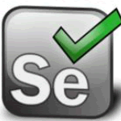
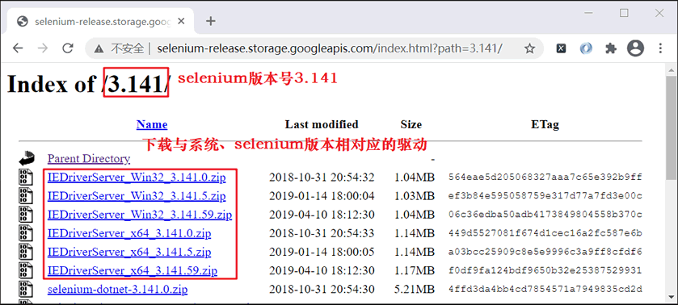
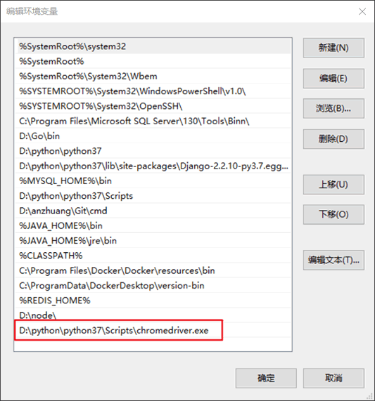
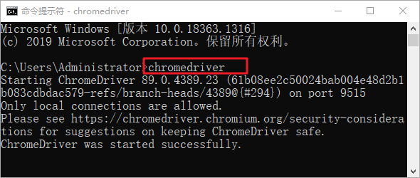
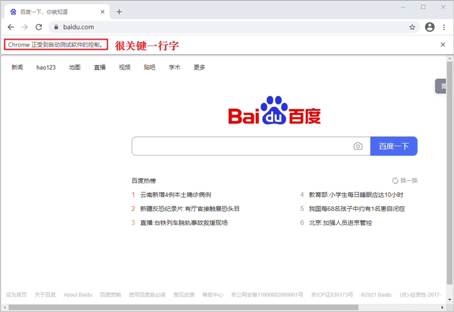

Python Selenium的下载和安装
Selenium 是一个用于测试 Web 应用程序的自动化测试工具，它直接运行在浏览器中，实现了对浏览器的自动化操作，它支持所有主流的浏览器，包括 IE，Firefox，Safari，Chrome 等。
Selenium 支持所有主流平台（如，Windows、Linux、IOS、Android、Edge、Opera等），同时，它也实现了诸多自动化功能，比如软件自动化测试，检测软件与浏览器兼容性，自动录制、生成不同语言的测试脚本，以及自动化爬虫等。本节及后续两节主要围绕自动化爬虫展开讲解。
Selenium 提供了一个工具集，包括 Selenium WebDriver（浏览器驱动）、Selenium IDE（录制测试脚本）、Selenium Grid（执行测试脚本）。后面两个主要用于测试脚本的录制、执行，因此不做介绍。我们只对 Selenium WebDriver 做重点讲解。
各种浏览器的驱动安装规程基本一致。不过需要注意：安装 Chrome、Firefox 驱动时，需要下载与浏览器版本相匹配的驱动程序，否则不能驱动浏览器。而 IE 较为特殊，您需要下载与 Selenium 版本相匹配的驱动文件，如下所示：
下面以 Windows10 平台 Chrome 浏览器为例讲解。首先检查浏览器版本号，并下载相应驱动文件，然后解压文件，将 Chromedriver.exe 文件拷贝到 Python 安装目录的 Scripts 目录下，最后将其添加到系统环境变量中。使用如下命令可查看 Python 安装路径：
经过上述代测试，说明我们安装的浏览器驱动可以正常工作。Selenium WebDriver 实现了许多操作浏览器功能。比如实现自动点击、自动输入、自动搜索、自动登录等等。
毫不夸张的说，Selenium 自动化爬虫是一种万能的爬虫程序，它可以仿照人的样子去打开网站，并拿到你想要的数据，因此你无须在意反爬措施。不过它最致命的缺点就是效率很低，因为每次点击、输入等操作都需要花费一定的时间，因此它仅适用于小批量的数据抓取。
Selenium 支持所有主流平台（如，Windows、Linux、IOS、Android、Edge、Opera等），同时，它也实现了诸多自动化功能，比如软件自动化测试，检测软件与浏览器兼容性，自动录制、生成不同语言的测试脚本，以及自动化爬虫等。本节及后续两节主要围绕自动化爬虫展开讲解。

图1：Python Selenium
图1：Python Selenium
Selenium 提供了一个工具集，包括 Selenium WebDriver（浏览器驱动）、Selenium IDE（录制测试脚本）、Selenium Grid（执行测试脚本）。后面两个主要用于测试脚本的录制、执行，因此不做介绍。我们只对 Selenium WebDriver 做重点讲解。
关于 Selenium IDE/Grid 的相关知识可参考官网文档 https://www.selenium.dev/。
Selenium下载安装
Selenium 安装非常简单，Linux、Mac 用户执行以下命令即可：sudo pip install SeleniumWindows 用户执行以下命令即可实现安装：
python -m pip install selenium除了使用上述命令安装外，您也可以通过官方网站下载 Selenium WebDriver 安装包，点击前往下载。
安装浏览器驱动
若想使 Selenium 能够调用浏览器，那么必须通过 webdriver 驱动来实现。不同的浏览器需要使用不同驱动程序，下面列出了不同浏览器驱动程序的下载地址：- 谷歌浏览器 chromedrive：http://chromedriver.storage.googleapis.com/index.html
- 火狐浏览器 geckodriver：https://github.com/mozilla/geckodriver/releases
- IE 浏览器 IEDriver：http://selenium-release.storage.googleapis.com/index.html
各种浏览器的驱动安装规程基本一致。不过需要注意：安装 Chrome、Firefox 驱动时，需要下载与浏览器版本相匹配的驱动程序，否则不能驱动浏览器。而 IE 较为特殊，您需要下载与 Selenium 版本相匹配的驱动文件，如下所示：

图1：IE 驱动下载
图1：IE 驱动下载
下面以 Windows10 平台 Chrome 浏览器为例讲解。首先检查浏览器版本号，并下载相应驱动文件，然后解压文件，将 Chromedriver.exe 文件拷贝到 Python 安装目录的 Scripts 目录下，最后将其添加到系统环境变量中。使用如下命令可查看 Python 安装路径：
where python您需要根据自己安装路径进行配置，我的环境变量配置如下：

图2：配置环境变量
上述操作完成后，在 CMD 命令行启动驱动程序，如下所示：图2：配置环境变量

图3：驱动开启成功
开启成功后，驱动程序会在后台运行。图3：驱动开启成功
自动访问百度
编写如下代码，实现自动化访问百度。
# 导入seleinum webdriver接口
from selenium import webdriver
import time
# 创建Chrome浏览器对象
browser = webdriver.Chrome()
#访问百度网站
browser.get('http://www.baidu.com/')
#阻塞3秒
time.sleep(3)
# 自动退出浏览器
browser.quit()
截取了运行中的显示结果，如下所示：

图4：Selenium自动化访问百度
图4：Selenium自动化访问百度
经过上述代测试，说明我们安装的浏览器驱动可以正常工作。Selenium WebDriver 实现了许多操作浏览器功能。比如实现自动点击、自动输入、自动搜索、自动登录等等。
毫不夸张的说，Selenium 自动化爬虫是一种万能的爬虫程序，它可以仿照人的样子去打开网站，并拿到你想要的数据，因此你无须在意反爬措施。不过它最致命的缺点就是效率很低，因为每次点击、输入等操作都需要花费一定的时间，因此它仅适用于小批量的数据抓取。
关注公众号「站长严长生」，在手机上阅读所有教程，随时随地都能学习。内含一款搜索神器，免费下载全网书籍和视频。

微信扫码关注公众号